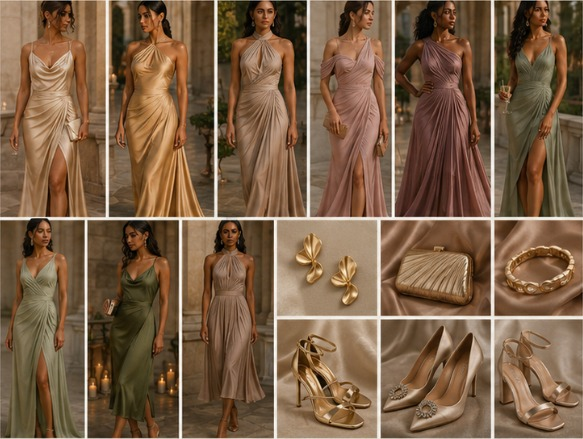
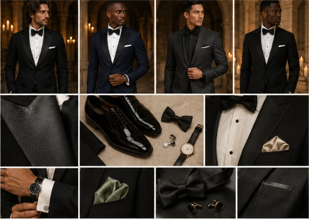

Tuesday is easy. Wednesday is dressed up. Find your night below.
Our sunset welcome party is on the sand at Minitas Beach. Don’t overthink it. Wear what feels good and come ready to relax. Soft, sandy neutrals are all we ask.
Look good. Be comfortable.
Flowing maxis, midis, or matching sets
Linen, cotton, gauze, or silk
Woven bags, gold jewelry, natural textures
Linen or cotton shirts
Tailored trousers in cream, sand, or taupe
No jacket or tie required
Flat sandals, espadrilles, or wedges
Save the stilettos for Wednesday
Bring a light layer for the evening breeze
The Only AskLeave the swimwear, athletic wear, and loud colors at the hotel.
Everyone is welcome to wear white on the beach. The next evening, white and ivory are reserved for the bride.
Our celebration begins at golden hour and goes well into the night. It’s black tie: tuxedos and dark suits, floor-length gowns or elevated midis, in fabrics that breathe on a warm Caribbean night.
One dress code, from the ceremony through the reception.
Ladies, please skip white and ivory dresses for the ceremony and reception. If it could pass for bridal in a photo, pick another shade. Champagne, soft gold, every deeper tone in the palette, and black are all yours.
Sculptural gowns, soft palette, formal shoes, expressive accessories.

NoteBe you. Let it show in your silhouette, texture, jewelry, and shoes. No white or ivory dresses. Save the linen and sandals for Tuesday, and skip beachwear and loud tropical prints.
Dark tailoring, breathable formal fabrics, polished footwear, restrained accessories.

NoteBe you. Let it show in your tailoring, texture, accessories, and shoes. Save the linen for Tuesday, and skip tan or beige suits, sneakers, brown shoes, and sandals.
One award for the women. One for the men. Express yourself from the ground up. Keep it formal.